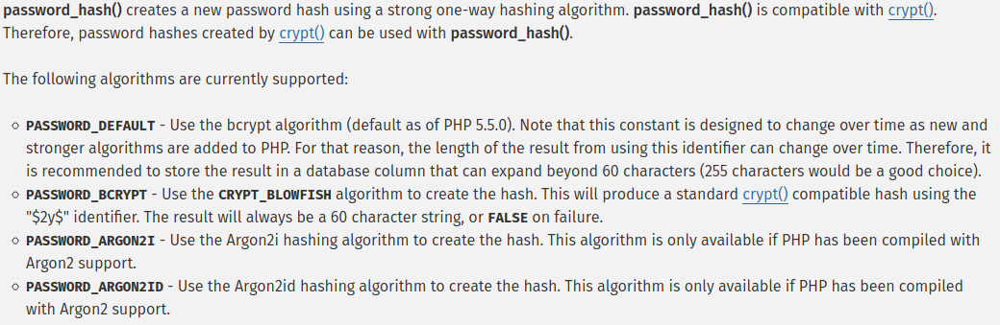

Function to hash passwords.
It takes 2 parameters: the user input and a constant (usually PASSWORD_DEFAULT).
After one can use password_verify(), taking the original input and the hashed one. It returns true or false, for verified or not verified.
